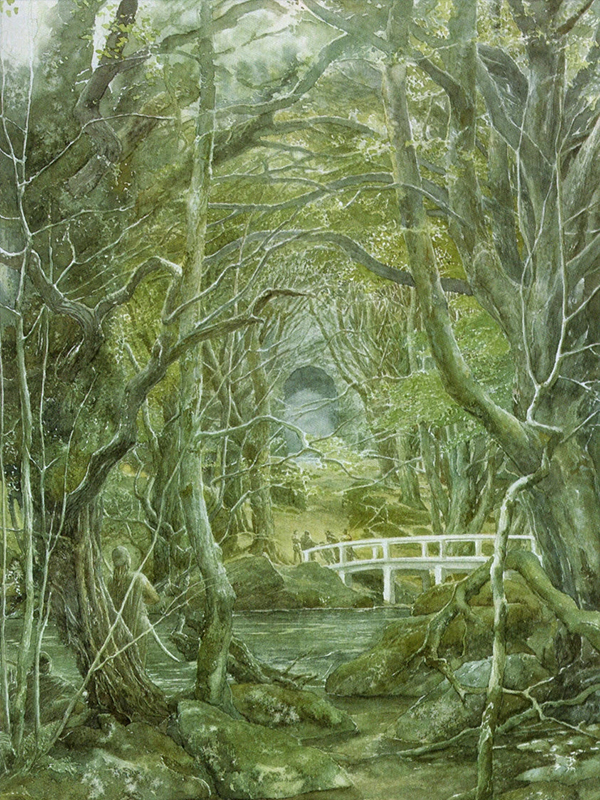
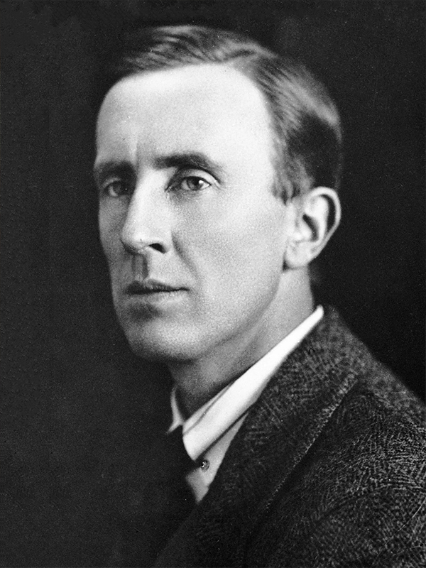

The Fellowship of the Ring(2001): The journy begins

The opening chapter of this great tale is "The Fellowship of the Ring." In this movie, which masterfully takes the viewers into the mythical land of
Middle-Earth
 Middle-earth is the fantastical setting of J.R.R. Tolkien's "The Lord of the Rings" trilogy. It is a vast and diverse world that encompasses continents, regions, and various races of beings. Middle-earth is rich in history, mythology, and captivating landscapes. From the peaceful Shire to the towering peaks of the Misty Mountains, and from the mystical forests of Lothlórien to the treacherous land of Mordor, Middle-earth is filled with both beauty and peril. It is a world where epic quests, battles between good and evil, and the enduring spirit of friendship and heroism unfold, leaving a lasting impact on readers and fans alike.
Middle-earth is the fantastical setting of J.R.R. Tolkien's "The Lord of the Rings" trilogy. It is a vast and diverse world that encompasses continents, regions, and various races of beings. Middle-earth is rich in history, mythology, and captivating landscapes. From the peaceful Shire to the towering peaks of the Misty Mountains, and from the mystical forests of Lothlórien to the treacherous land of Mordor, Middle-earth is filled with both beauty and peril. It is a world where epic quests, battles between good and evil, and the enduring spirit of friendship and heroism unfold, leaving a lasting impact on readers and fans alike.Frodo Baggins
 Frodo Baggins is the central protagonist of J.R.R. Tolkien's "The Lord of the Rings" trilogy. As a hobbit from the Shire, Frodo is unexpectedly chosen to carry the One Ring and embark on a perilous quest to destroy it. Frodo's journey is characterized by his courage, resilience, and the weight of his burden. Despite facing immense challenges and temptations, Frodo remains steadfast in his mission, demonstrating unwavering determination and self-sacrifice. His moral strength and compassion make him an iconic character, showcasing the power of individual courage in the face of overwhelming darkness. Frodo's story serves as a timeless reminder of the potential for heroism in the most unexpected of heroes.
Frodo Baggins is the central protagonist of J.R.R. Tolkien's "The Lord of the Rings" trilogy. As a hobbit from the Shire, Frodo is unexpectedly chosen to carry the One Ring and embark on a perilous quest to destroy it. Frodo's journey is characterized by his courage, resilience, and the weight of his burden. Despite facing immense challenges and temptations, Frodo remains steadfast in his mission, demonstrating unwavering determination and self-sacrifice. His moral strength and compassion make him an iconic character, showcasing the power of individual courage in the face of overwhelming darkness. Frodo's story serves as a timeless reminder of the potential for heroism in the most unexpected of heroes. The movie's prologue establishes the setting for the grand adventure that will come next. We discover the history of the One Ring,  Sauron is the primary antagonist in J.R.R. Tolkien's "The Lord of the Rings" trilogy. He is an ancient and powerful Maia, corrupted by the desire for dominion over Middle-Earth. Sauron's ultimate goal is to reclaim the One Ring and use its dark powers to rule all realms. As a malevolent force, he is depicted as a fiery eye atop the Dark Tower of Barad-dûr. Sauron's presence spreads fear and corruption, manipulating and deceiving others to further his sinister plans. His pursuit of the One Ring and his armies of orcs and other dark creatures pose a significant threat to the free peoples of Middle-Earth.
Sauron is the primary antagonist in J.R.R. Tolkien's "The Lord of the Rings" trilogy. He is an ancient and powerful Maia, corrupted by the desire for dominion over Middle-Earth. Sauron's ultimate goal is to reclaim the One Ring and use its dark powers to rule all realms. As a malevolent force, he is depicted as a fiery eye atop the Dark Tower of Barad-dûr. Sauron's presence spreads fear and corruption, manipulating and deceiving others to further his sinister plans. His pursuit of the One Ring and his armies of orcs and other dark creatures pose a significant threat to the free peoples of Middle-Earth. 's rise to power, and the valiant deeds of the Last Alliance of Elves and Men. From there, we will be taken to Frodo Baggins is the central protagonist of J.R.R. Tolkien's "The Lord of the Rings" trilogy. As a hobbit from the Shire, Frodo is unexpectedly chosen to carry the One Ring and embark on a perilous quest to destroy it. Frodo's journey is characterized by his courage, resilience, and the weight of his burden. Despite facing immense challenges and temptations, Frodo remains steadfast in his mission, demonstrating unwavering determination and self-sacrifice. His moral strength and compassion make him an iconic character, showcasing the power of individual courage in the face of overwhelming darkness. Frodo's story serves as a timeless reminder of the potential for heroism in the most unexpected of heroes. 's peaceful home in the  The Shire is a peaceful and idyllic region in J.R.R. Tolkien's "The Lord of the Rings" trilogy. It is the homeland of the hobbits, a small and unassuming race. The Shire is known for its picturesque landscapes, rolling hills, and quaint villages. The hobbits of the Shire lead simple lives, centered around agriculture, good food, and camaraderie. The inhabitants value peace, comfort, and a love for nature. Despite its seemingly uneventful nature, the Shire becomes an important starting point for the grand adventure that unfolds in the story, representing a place of innocence and respite amidst the looming darkness of the wider world.
The Shire is a peaceful and idyllic region in J.R.R. Tolkien's "The Lord of the Rings" trilogy. It is the homeland of the hobbits, a small and unassuming race. The Shire is known for its picturesque landscapes, rolling hills, and quaint villages. The hobbits of the Shire lead simple lives, centered around agriculture, good food, and camaraderie. The inhabitants value peace, comfort, and a love for nature. Despite its seemingly uneventful nature, the Shire becomes an important starting point for the grand adventure that unfolds in the story, representing a place of innocence and respite amidst the looming darkness of the wider world. . In the film, the stakes are expertly raised, sending Frodo Baggins is the central protagonist of J.R.R. Tolkien's "The Lord of the Rings" trilogy. As a hobbit from the Shire, Frodo is unexpectedly chosen to carry the One Ring and embark on a perilous quest to destroy it. Frodo's journey is characterized by his courage, resilience, and the weight of his burden. Despite facing immense challenges and temptations, Frodo remains steadfast in his mission, demonstrating unwavering determination and self-sacrifice. His moral strength and compassion make him an iconic character, showcasing the power of individual courage in the face of overwhelming darkness. Frodo's story serves as a timeless reminder of the potential for heroism in the most unexpected of heroes. and his loyal companions on a harrowing journey to  Mount Doom, also known as Orodruin, is a prominent volcanic peak located in the land of Mordor in J.R.R. Tolkien's "The Lord of the Rings" trilogy. It serves as a central and pivotal location in the story as the place where the One Ring was forged and must be destroyed. Mount Doom is characterized by its fiery and treacherous nature, with molten lava and a suffocating atmosphere. It represents the heart of Sauron's power and the ultimate test of Frodo's resolve as he and his companions undertake the perilous journey to destroy the Ring and save Middle-Earth from darkness.
Mount Doom, also known as Orodruin, is a prominent volcanic peak located in the land of Mordor in J.R.R. Tolkien's "The Lord of the Rings" trilogy. It serves as a central and pivotal location in the story as the place where the One Ring was forged and must be destroyed. Mount Doom is characterized by its fiery and treacherous nature, with molten lava and a suffocating atmosphere. It represents the heart of Sauron's power and the ultimate test of Frodo's resolve as he and his companions undertake the perilous journey to destroy the Ring and save Middle-Earth from darkness. .
Sauron
Sauron is the primary antagonist in J.R.R. Tolkien's "The Lord of the Rings" trilogy. He is an ancient and powerful Maia, corrupted by the desire for dominion over Middle-Earth. Sauron's ultimate goal is to reclaim the One Ring and use its dark powers to rule all realms. As a malevolent force, he is depicted as a fiery eye atop the Dark Tower of Barad-dûr. Sauron's presence spreads fear and corruption, manipulating and deceiving others to further his sinister plans. His pursuit of the One Ring and his armies of orcs and other dark creatures pose a significant threat to the free peoples of Middle-Earth.Frodo
Frodo Baggins is the central protagonist of J.R.R. Tolkien's "The Lord of the Rings" trilogy. As a hobbit from the Shire, Frodo is unexpectedly chosen to carry the One Ring and embark on a perilous quest to destroy it. Frodo's journey is characterized by his courage, resilience, and the weight of his burden. Despite facing immense challenges and temptations, Frodo remains steadfast in his mission, demonstrating unwavering determination and self-sacrifice. His moral strength and compassion make him an iconic character, showcasing the power of individual courage in the face of overwhelming darkness. Frodo's story serves as a timeless reminder of the potential for heroism in the most unexpected of heroes.Shire
The Shire is a peaceful and idyllic region in J.R.R. Tolkien's "The Lord of the Rings" trilogy. It is the homeland of the hobbits, a small and unassuming race. The Shire is known for its picturesque landscapes, rolling hills, and quaint villages. The hobbits of the Shire lead simple lives, centered around agriculture, good food, and camaraderie. The inhabitants value peace, comfort, and a love for nature. Despite its seemingly uneventful nature, the Shire becomes an important starting point for the grand adventure that unfolds in the story, representing a place of innocence and respite amidst the looming darkness of the wider world.Frodo
Frodo Baggins is the central protagonist of J.R.R. Tolkien's "The Lord of the Rings" trilogy. As a hobbit from the Shire, Frodo is unexpectedly chosen to carry the One Ring and embark on a perilous quest to destroy it. Frodo's journey is characterized by his courage, resilience, and the weight of his burden. Despite facing immense challenges and temptations, Frodo remains steadfast in his mission, demonstrating unwavering determination and self-sacrifice. His moral strength and compassion make him an iconic character, showcasing the power of individual courage in the face of overwhelming darkness. Frodo's story serves as a timeless reminder of the potential for heroism in the most unexpected of heroes.Mount Doom
Mount Doom, also known as Orodruin, is a prominent volcanic peak located in the land of Mordor in J.R.R. Tolkien's "The Lord of the Rings" trilogy. It serves as a central and pivotal location in the story as the place where the One Ring was forged and must be destroyed. Mount Doom is characterized by its fiery and treacherous nature, with molten lava and a suffocating atmosphere. It represents the heart of Sauron's power and the ultimate test of Frodo's resolve as he and his companions undertake the perilous journey to destroy the Ring and save Middle-Earth from darkness. The Fellowship of the Ring masterfully strikes a balance between character development and narrative. forming the Fellowship, a varied group of individuals brought together to achieve a common goal. From the wizard  Gandalf, also known as Gandalf the Grey, is a central character in J.R.R. Tolkien's "The Lord of the Rings" trilogy. He is a wise and powerful wizard who guides the Fellowship of the Ring in their quest to destroy the One Ring. Gandalf possesses immense knowledge and magical abilities, using them to aid the cause of good. He is portrayed as an old man with a long gray beard and a staff. Gandalf's wisdom, resourcefulness, and unwavering commitment to the greater good make him a beloved and respected figure in the story.
Gandalf, also known as Gandalf the Grey, is a central character in J.R.R. Tolkien's "The Lord of the Rings" trilogy. He is a wise and powerful wizard who guides the Fellowship of the Ring in their quest to destroy the One Ring. Gandalf possesses immense knowledge and magical abilities, using them to aid the cause of good. He is portrayed as an old man with a long gray beard and a staff. Gandalf's wisdom, resourcefulness, and unwavering commitment to the greater good make him a beloved and respected figure in the story. , the group's leader, to  Aragorn, also known as Strider, is a key character in J.R.R. Tolkien's "The Lord of the Rings" trilogy. He is the rightful heir to the throne of Gondor and the true King of Men. Aragorn is portrayed as a skilled warrior, wise and compassionate leader, and a formidable protector of Middle-Earth. He joins the Fellowship of the Ring and plays a crucial role in their quest to defeat Sauron and destroy the One Ring. Aragorn's journey is one of self-discovery as he embraces his destiny and emerges as a true king, leading the armies of Men against the forces of darkness.
Aragorn, also known as Strider, is a key character in J.R.R. Tolkien's "The Lord of the Rings" trilogy. He is the rightful heir to the throne of Gondor and the true King of Men. Aragorn is portrayed as a skilled warrior, wise and compassionate leader, and a formidable protector of Middle-Earth. He joins the Fellowship of the Ring and plays a crucial role in their quest to defeat Sauron and destroy the One Ring. Aragorn's journey is one of self-discovery as he embraces his destiny and emerges as a true king, leading the armies of Men against the forces of darkness. , the heir of and a , , a of the ,  Gimli is a courageous and stout-hearted dwarf from J.R.R. Tolkien's "The Lord of the Rings" trilogy. Hailing from the kingdom of Erebor, Gimli joins the Fellowship of the Ring as a representative of his people. He is known for his strength, skill in battle, and unwavering loyalty. Gimli forms an unlikely friendship with Legolas, overcoming their initial differences and forging a deep bond. He showcases the indomitable spirit and resilience of the dwarves, contributing to the Fellowship's quest and playing a vital role in the battles against Sauron's forces. Gimli's fierce determination and steadfastness make him a beloved and memorable character in the story.
Gimli is a courageous and stout-hearted dwarf from J.R.R. Tolkien's "The Lord of the Rings" trilogy. Hailing from the kingdom of Erebor, Gimli joins the Fellowship of the Ring as a representative of his people. He is known for his strength, skill in battle, and unwavering loyalty. Gimli forms an unlikely friendship with Legolas, overcoming their initial differences and forging a deep bond. He showcases the indomitable spirit and resilience of the dwarves, contributing to the Fellowship's quest and playing a vital role in the battles against Sauron's forces. Gimli's fierce determination and steadfastness make him a beloved and memorable character in the story. , a warrior dwarf and the son of , and the fellowship's devoted hobbits  Samwise Gamgee, often referred to as Sam, is a loyal and steadfast hobbit from J.R.R. Tolkien's "The Lord of the Rings" trilogy. He serves as Frodo Baggins' faithful companion and gardener throughout their perilous journey to destroy the One Ring. Sam embodies unwavering loyalty, courage, and unwavering determination. Despite being a humble hobbit, Sam proves himself to be incredibly brave and resourceful, constantly providing support and encouragement to Frodo. He exemplifies the power of friendship, selflessness, and perseverance, playing an instrumental role in the quest to save Middle-Earth. Sam's unwavering devotion and humble heroism make him one of the most beloved characters in the trilogy.
Samwise Gamgee, often referred to as Sam, is a loyal and steadfast hobbit from J.R.R. Tolkien's "The Lord of the Rings" trilogy. He serves as Frodo Baggins' faithful companion and gardener throughout their perilous journey to destroy the One Ring. Sam embodies unwavering loyalty, courage, and unwavering determination. Despite being a humble hobbit, Sam proves himself to be incredibly brave and resourceful, constantly providing support and encouragement to Frodo. He exemplifies the power of friendship, selflessness, and perseverance, playing an instrumental role in the quest to save Middle-Earth. Sam's unwavering devotion and humble heroism make him one of the most beloved characters in the trilogy. ,  Meriadoc Brandybuck, commonly known as Merry, is a hobbit from J.R.R. Tolkien's "The Lord of the Rings" trilogy. Despite his youthful appearance, Merry possesses a courageous spirit and a strong sense of loyalty. Alongside his close friend Pippin, Merry becomes an integral member of the Fellowship of the Ring. He showcases his intelligence, resourcefulness, and bravery throughout their perilous journey. Merry's growth as a character is notable as he transforms from a mischievous hobbit into a mature and capable warrior. His unwavering determination and willingness to fight for the cause of good make him a beloved and respected member of the Fellowship.
Meriadoc Brandybuck, commonly known as Merry, is a hobbit from J.R.R. Tolkien's "The Lord of the Rings" trilogy. Despite his youthful appearance, Merry possesses a courageous spirit and a strong sense of loyalty. Alongside his close friend Pippin, Merry becomes an integral member of the Fellowship of the Ring. He showcases his intelligence, resourcefulness, and bravery throughout their perilous journey. Merry's growth as a character is notable as he transforms from a mischievous hobbit into a mature and capable warrior. His unwavering determination and willingness to fight for the cause of good make him a beloved and respected member of the Fellowship. , and  Peregrin Took, often known as Pippin, is a curious and mischievous hobbit from J.R.R. Tolkien's "The Lord of the Rings" trilogy. Pippin starts his journey as a carefree and impulsive character, but his experiences and growth throughout the story shape him into a brave and responsible individual. Pippin's loyalty and friendship are unwavering, and he becomes a key member of the Fellowship of the Ring. Despite his initial naivety, Pippin proves his worth by taking courageous actions and making important contributions to the quest. His journey highlights the transformative power of friendship, responsibility, and personal growth.
Peregrin Took, often known as Pippin, is a curious and mischievous hobbit from J.R.R. Tolkien's "The Lord of the Rings" trilogy. Pippin starts his journey as a carefree and impulsive character, but his experiences and growth throughout the story shape him into a brave and responsible individual. Pippin's loyalty and friendship are unwavering, and he becomes a key member of the Fellowship of the Ring. Despite his initial naivety, Pippin proves his worth by taking courageous actions and making important contributions to the quest. His journey highlights the transformative power of friendship, responsibility, and personal growth. , each member of the squad brings a distinct viewpoint and set of skills to the team.
Gandalf
Gandalf, also known as Gandalf the Grey, is a central character in J.R.R. Tolkien's "The Lord of the Rings" trilogy. He is a wise and powerful wizard who guides the Fellowship of the Ring in their quest to destroy the One Ring. Gandalf possesses immense knowledge and magical abilities, using them to aid the cause of good. He is portrayed as an old man with a long gray beard and a staff. Gandalf's wisdom, resourcefulness, and unwavering commitment to the greater good make him a beloved and respected figure in the story.Aragorn
Aragorn, also known as Strider, is a key character in J.R.R. Tolkien's "The Lord of the Rings" trilogy. He is the rightful heir to the throne of Gondor and the true King of Men. Aragorn is portrayed as a skilled warrior, wise and compassionate leader, and a formidable protector of Middle-Earth. He joins the Fellowship of the Ring and plays a crucial role in their quest to defeat Sauron and destroy the One Ring. Aragorn's journey is one of self-discovery as he embraces his destiny and emerges as a true king, leading the armies of Men against the forces of darkness.Isildur
Isildur is a pivotal character in J.R.R. Tolkien's "The Lord of the Rings" trilogy. He is an ancient king and the son of Elendil, the founder of the kingdom of Gondor. Isildur is known for his role in cutting the One Ring from the hand of the Dark Lord Sauron during the Battle of the Last Alliance. However, he succumbs to the temptation of the Ring and chooses to keep it instead of destroying it. Isildur's decision ultimately leads to his demise and sets in motion the events of the trilogy. His story serves as a cautionary tale about the corrupting power of the One Ring.
Ranger of the North
The Ranger of the North, also known as the Dúnedain, is a mysterious and skilled group of warriors in J.R.R. Tolkien's "The Lord of the Rings" trilogy. They are descendants of the ancient kingdom of Arnor and are led by their chieftain, Aragorn. The Rangers of the North patrol the lands, keeping a watchful eye on the borders of their kingdom and protecting the innocent from the dangers of the wilderness. They are skilled trackers, archers, and fighters, known for their stealth and resilience. The Ranger of the North plays a crucial role in the fight against the forces of evil and in supporting the Fellowship of the Ring in their quest.
Legolas
Legolas is an elven prince from the woodland realm of Mirkwood in J.R.R. Tolkien's "The Lord of the Rings" trilogy. He is a skilled archer and warrior, known for his exceptional agility and keen senses. Legolas joins the Fellowship of the Ring and becomes a loyal and valuable member. With his remarkable marksmanship and elven grace, Legolas contributes to the battles against the forces of evil. He forms a close friendship with the dwarf Gimli, showcasing the power of unity and overcoming cultural differences. Legolas' ethereal beauty, bravery, and unwavering loyalty make him a beloved and memorable character in the story.
Sindar elf
The Sindar Elves are a noble and ancient race in J.R.R. Tolkien's "The Lord of the Rings" trilogy. They are a branch of the Elves who chose to remain in Middle-Earth instead of journeying to the Undying Lands. The Sindar Elves are known for their deep connection with nature and their mastery of craftsmanship. They inhabit forests, particularly the realm of Doriath, and are led by King Thingol. The Sindar Elves are skilled warriors, archers, and musicians, and they possess a great reverence for the natural world. They play a significant role in the history and events of Middle-Earth, contributing to the fight against evil and preserving the elven heritage.
Woodland realm
 The Woodland Realm, also known as the Kingdom of Mirkwood, is a realm of the Elves in J.R.R. Tolkien's "The Lord of the Rings" trilogy. It is an enchanted and mysterious woodland located in the eastern part of Middle-Earth. The Woodland Realm is characterized by its dense forests, shimmering streams, and magical atmosphere. Ruled by King Thranduil, the Woodland Realm is home to the Silvan Elves, who are skilled archers and guardians of the forest. The kingdom holds great beauty and harbors both light and shadow. It plays a significant role in the events of the trilogy, offering refuge, wisdom, and aid to the Fellowship of the Ring.
Gimli
Gimli is a courageous and stout-hearted dwarf from J.R.R. Tolkien's "The Lord of the Rings" trilogy. Hailing from the kingdom of Erebor, Gimli joins the Fellowship of the Ring as a representative of his people. He is known for his strength, skill in battle, and unwavering loyalty. Gimli forms an unlikely friendship with Legolas, overcoming their initial differences and forging a deep bond. He showcases the indomitable spirit and resilience of the dwarves, contributing to the Fellowship's quest and playing a vital role in the battles against Sauron's forces. Gimli's fierce determination and steadfastness make him a beloved and memorable character in the story.Glóin
Gloin is a sturdy and proud dwarf from J.R.R. Tolkien's "The Lord of the Rings" trilogy. He is a member of the Company of Thorin Oakenshield and one of the thirteen dwarves who embark on the quest to reclaim their homeland, Erebor. Gloin is the father of Gimli, who later becomes a member of the Fellowship of the Ring. Known for his skill with an axe and his strong sense of honor, Gloin represents the resilience and determination of the dwarven race. He contributes to the group's journey, facing various challenges and demonstrating his loyalty to his kin and their ancestral legacy.
Sam
Samwise Gamgee, often referred to as Sam, is a loyal and steadfast hobbit from J.R.R. Tolkien's "The Lord of the Rings" trilogy. He serves as Frodo Baggins' faithful companion and gardener throughout their perilous journey to destroy the One Ring. Sam embodies unwavering loyalty, courage, and unwavering determination. Despite being a humble hobbit, Sam proves himself to be incredibly brave and resourceful, constantly providing support and encouragement to Frodo. He exemplifies the power of friendship, selflessness, and perseverance, playing an instrumental role in the quest to save Middle-Earth. Sam's unwavering devotion and humble heroism make him one of the most beloved characters in the trilogy.Merry
Meriadoc Brandybuck, commonly known as Merry, is a hobbit from J.R.R. Tolkien's "The Lord of the Rings" trilogy. Despite his youthful appearance, Merry possesses a courageous spirit and a strong sense of loyalty. Alongside his close friend Pippin, Merry becomes an integral member of the Fellowship of the Ring. He showcases his intelligence, resourcefulness, and bravery throughout their perilous journey. Merry's growth as a character is notable as he transforms from a mischievous hobbit into a mature and capable warrior. His unwavering determination and willingness to fight for the cause of good make him a beloved and respected member of the Fellowship.Pippin
Peregrin Took, often known as Pippin, is a curious and mischievous hobbit from J.R.R. Tolkien's "The Lord of the Rings" trilogy. Pippin starts his journey as a carefree and impulsive character, but his experiences and growth throughout the story shape him into a brave and responsible individual. Pippin's loyalty and friendship are unwavering, and he becomes a key member of the Fellowship of the Ring. Despite his initial naivety, Pippin proves his worth by taking courageous actions and making important contributions to the quest. His journey highlights the transformative power of friendship, responsibility, and personal growth. The movie takes us on a fantastic journey across many Middle-earth is the fantastical setting of J.R.R. Tolkien's "The Lord of the Rings" trilogy. It is a vast and diverse world that encompasses continents, regions, and various races of beings. Middle-earth is rich in history, mythology, and captivating landscapes. From the peaceful Shire to the towering peaks of the Misty Mountains, and from the mystical forests of Lothlórien to the treacherous land of Mordor, Middle-earth is filled with both beauty and peril. It is a world where epic quests, battles between good and evil, and the enduring spirit of friendship and heroism unfold, leaving a lasting impact on readers and fans alike. locations. From the peaceful beauty of  Rivendell, also known as Imladris, is an Elven refuge nestled amidst the Misty Mountains in J.R.R. Tolkien's "The Lord of the Rings" trilogy. It is a serene and enchanting sanctuary, hidden from the outside world. Rivendell serves as a gathering place for wise and noble beings, including Elves, Men, and other creatures. Known for its breathtaking natural beauty and intricate architecture, it is a place of knowledge, healing, and solace. The Elves of Rivendell, led by Lord Elrond, possess ancient wisdom and provide guidance to the Fellowship of the Ring. It is a pivotal location where destiny unfolds and the fate of Middle-earth is discussed and decided.
Rivendell, also known as Imladris, is an Elven refuge nestled amidst the Misty Mountains in J.R.R. Tolkien's "The Lord of the Rings" trilogy. It is a serene and enchanting sanctuary, hidden from the outside world. Rivendell serves as a gathering place for wise and noble beings, including Elves, Men, and other creatures. Known for its breathtaking natural beauty and intricate architecture, it is a place of knowledge, healing, and solace. The Elves of Rivendell, led by Lord Elrond, possess ancient wisdom and provide guidance to the Fellowship of the Ring. It is a pivotal location where destiny unfolds and the fate of Middle-earth is discussed and decided. to the deadly Mines of  Moria, also known as Khazad-dûm, is an ancient underground realm in J.R.R. Tolkien's "The Lord of the Rings" trilogy. Once a magnificent Dwarven kingdom, Moria now stands as a vast network of dark and perilous tunnels. It is located beneath the Misty Mountains and is known for its intricate architecture, including massive halls and grand chambers. However, the mines of Moria have long been abandoned due to the awakening of a malevolent presence known as the Balrog. The journey through Moria presents numerous dangers and challenges for the members of the Fellowship of the Ring, including treacherous paths, riddles, and a fateful confrontation with the Balrog itself.
Moria, also known as Khazad-dûm, is an ancient underground realm in J.R.R. Tolkien's "The Lord of the Rings" trilogy. Once a magnificent Dwarven kingdom, Moria now stands as a vast network of dark and perilous tunnels. It is located beneath the Misty Mountains and is known for its intricate architecture, including massive halls and grand chambers. However, the mines of Moria have long been abandoned due to the awakening of a malevolent presence known as the Balrog. The journey through Moria presents numerous dangers and challenges for the members of the Fellowship of the Ring, including treacherous paths, riddles, and a fateful confrontation with the Balrog itself. and the ethereal  Lothlórien, also known as the Golden Wood, is an enchanted forest realm in J.R.R. Tolkien's "The Lord of the Rings" trilogy. It is home to the Galadhrim, a community of Elves led by Lady Galadriel and Lord Celeborn. Lothlórien is renowned for its ethereal beauty, with tall mallorn trees, shimmering silver fountains, and glowing flowers. The realm is protected by magic and the power of the Elves, making it a sanctuary from the encroaching darkness of Sauron's forces. Visiting Lothlórien is a transformative experience, as time seems to stand still and the air is filled with an otherworldly tranquility.
Lothlórien, also known as the Golden Wood, is an enchanted forest realm in J.R.R. Tolkien's "The Lord of the Rings" trilogy. It is home to the Galadhrim, a community of Elves led by Lady Galadriel and Lord Celeborn. Lothlórien is renowned for its ethereal beauty, with tall mallorn trees, shimmering silver fountains, and glowing flowers. The realm is protected by magic and the power of the Elves, making it a sanctuary from the encroaching darkness of Sauron's forces. Visiting Lothlórien is a transformative experience, as time seems to stand still and the air is filled with an otherworldly tranquility. , each scene is meticulously brought to life. While watching the movie, viewers will be amazed and drawn in by how vast and magnificent the settings are.
Middle-Earth
Middle-earth is the fantastical setting of J.R.R. Tolkien's "The Lord of the Rings" trilogy. It is a vast and diverse world that encompasses continents, regions, and various races of beings. Middle-earth is rich in history, mythology, and captivating landscapes. From the peaceful Shire to the towering peaks of the Misty Mountains, and from the mystical forests of Lothlórien to the treacherous land of Mordor, Middle-earth is filled with both beauty and peril. It is a world where epic quests, battles between good and evil, and the enduring spirit of friendship and heroism unfold, leaving a lasting impact on readers and fans alike.Rivendell
Rivendell, also known as Imladris, is an Elven refuge nestled amidst the Misty Mountains in J.R.R. Tolkien's "The Lord of the Rings" trilogy. It is a serene and enchanting sanctuary, hidden from the outside world. Rivendell serves as a gathering place for wise and noble beings, including Elves, Men, and other creatures. Known for its breathtaking natural beauty and intricate architecture, it is a place of knowledge, healing, and solace. The Elves of Rivendell, led by Lord Elrond, possess ancient wisdom and provide guidance to the Fellowship of the Ring. It is a pivotal location where destiny unfolds and the fate of Middle-earth is discussed and decided.Moria
Moria, also known as Khazad-dûm, is an ancient underground realm in J.R.R. Tolkien's "The Lord of the Rings" trilogy. Once a magnificent Dwarven kingdom, Moria now stands as a vast network of dark and perilous tunnels. It is located beneath the Misty Mountains and is known for its intricate architecture, including massive halls and grand chambers. However, the mines of Moria have long been abandoned due to the awakening of a malevolent presence known as the Balrog. The journey through Moria presents numerous dangers and challenges for the members of the Fellowship of the Ring, including treacherous paths, riddles, and a fateful confrontation with the Balrog itself.Lothlórien
Lothlórien, also known as the Golden Wood, is an enchanted forest realm in J.R.R. Tolkien's "The Lord of the Rings" trilogy. It is home to the Galadhrim, a community of Elves led by Lady Galadriel and Lord Celeborn. Lothlórien is renowned for its ethereal beauty, with tall mallorn trees, shimmering silver fountains, and glowing flowers. The realm is protected by magic and the power of the Elves, making it a sanctuary from the encroaching darkness of Sauron's forces. Visiting Lothlórien is a transformative experience, as time seems to stand still and the air is filled with an otherworldly tranquility. The movie "The Fellowship of the Ring" contains several memorable moments. The intense battle at Amon Hen, the heartbreaking moment when the Fellowship was broken, and the spectacular battle with the  The Balrog is a fearsome creature of fire and shadow in J.R.R. Tolkien's "The Lord of the Rings" trilogy. It is a monstrous demon, awakened from its slumber deep within the depths of Moria. Towering in height, the Balrog possesses immense strength and wields a fiery whip and a flaming sword. Its presence is marked by billowing smoke, darkness, and an overwhelming aura of terror. The Balrog is a formidable adversary, capable of unleashing devastating attacks and instilling fear in even the bravest of hearts. It is a pivotal antagonist in the story, posing a deadly threat to the members of the Fellowship of the Ring as they traverse through Moria.
The Balrog is a fearsome creature of fire and shadow in J.R.R. Tolkien's "The Lord of the Rings" trilogy. It is a monstrous demon, awakened from its slumber deep within the depths of Moria. Towering in height, the Balrog possesses immense strength and wields a fiery whip and a flaming sword. Its presence is marked by billowing smoke, darkness, and an overwhelming aura of terror. The Balrog is a formidable adversary, capable of unleashing devastating attacks and instilling fear in even the bravest of hearts. It is a pivotal antagonist in the story, posing a deadly threat to the members of the Fellowship of the Ring as they traverse through Moria. in the depths of Moria, also known as Khazad-dûm, is an ancient underground realm in J.R.R. Tolkien's "The Lord of the Rings" trilogy. Once a magnificent Dwarven kingdom, Moria now stands as a vast network of dark and perilous tunnels. It is located beneath the Misty Mountains and is known for its intricate architecture, including massive halls and grand chambers. However, the mines of Moria have long been abandoned due to the awakening of a malevolent presence known as the Balrog. The journey through Moria presents numerous dangers and challenges for the members of the Fellowship of the Ring, including treacherous paths, riddles, and a fateful confrontation with the Balrog itself. , each left a lasting effect on viewers' hearts. The skilled cast and crew of the movie painstakingly created and brought to life these scenes, adding to the movie's enduring legacy.
Balrog
The Balrog is a fearsome creature of fire and shadow in J.R.R. Tolkien's "The Lord of the Rings" trilogy. It is a monstrous demon, awakened from its slumber deep within the depths of Moria. Towering in height, the Balrog possesses immense strength and wields a fiery whip and a flaming sword. Its presence is marked by billowing smoke, darkness, and an overwhelming aura of terror. The Balrog is a formidable adversary, capable of unleashing devastating attacks and instilling fear in even the bravest of hearts. It is a pivotal antagonist in the story, posing a deadly threat to the members of the Fellowship of the Ring as they traverse through Moria.Moria
Moria, also known as Khazad-dûm, is an ancient underground realm in J.R.R. Tolkien's "The Lord of the Rings" trilogy. Once a magnificent Dwarven kingdom, Moria now stands as a vast network of dark and perilous tunnels. It is located beneath the Misty Mountains and is known for its intricate architecture, including massive halls and grand chambers. However, the mines of Moria have long been abandoned due to the awakening of a malevolent presence known as the Balrog. The journey through Moria presents numerous dangers and challenges for the members of the Fellowship of the Ring, including treacherous paths, riddles, and a fateful confrontation with the Balrog itself. The success of the movie established  Peter Jackson is a renowned New Zealand filmmaker known for his work on the "The Lord of the Rings" film trilogy. Born on October 31, 1961, in Pukerua Bay, New Zealand, Jackson's talent and passion for storytelling have made him a prominent figure in the film industry. His adaptation of J.R.R. Tolkien's epic fantasy novels captivated audiences worldwide, earning critical acclaim and numerous awards. With his visionary direction and attention to detail, Jackson brought Middle-earth to life on the big screen, creating a cinematic masterpiece. His contributions to the film industry and the success of "The Lord of the Rings" trilogy have solidified his place as a respected filmmaker.
Peter Jackson is a renowned New Zealand filmmaker known for his work on the "The Lord of the Rings" film trilogy. Born on October 31, 1961, in Pukerua Bay, New Zealand, Jackson's talent and passion for storytelling have made him a prominent figure in the film industry. His adaptation of J.R.R. Tolkien's epic fantasy novels captivated audiences worldwide, earning critical acclaim and numerous awards. With his visionary direction and attention to detail, Jackson brought Middle-earth to life on the big screen, creating a cinematic masterpiece. His contributions to the film industry and the success of "The Lord of the Rings" trilogy have solidified his place as a respected filmmaker. as a brilliant director and opened the door for many sequels. Also, it made Middle-earth is the fantastical setting of J.R.R. Tolkien's "The Lord of the Rings" trilogy. It is a vast and diverse world that encompasses continents, regions, and various races of beings. Middle-earth is rich in history, mythology, and captivating landscapes. From the peaceful Shire to the towering peaks of the Misty Mountains, and from the mystical forests of Lothlórien to the treacherous land of Mordor, Middle-earth is filled with both beauty and peril. It is a world where epic quests, battles between good and evil, and the enduring spirit of friendship and heroism unfold, leaving a lasting impact on readers and fans alike. approachable to a new generation, sparking interest in 's writings and inspiring numerous fans throughout the world.
Peter Jackson
Peter Jackson is a renowned New Zealand filmmaker known for his work on the "The Lord of the Rings" film trilogy. Born on October 31, 1961, in Pukerua Bay, New Zealand, Jackson's talent and passion for storytelling have made him a prominent figure in the film industry. His adaptation of J.R.R. Tolkien's epic fantasy novels captivated audiences worldwide, earning critical acclaim and numerous awards. With his visionary direction and attention to detail, Jackson brought Middle-earth to life on the big screen, creating a cinematic masterpiece. His contributions to the film industry and the success of "The Lord of the Rings" trilogy have solidified his place as a respected filmmaker.Middle-Earth
Middle-earth is the fantastical setting of J.R.R. Tolkien's "The Lord of the Rings" trilogy. It is a vast and diverse world that encompasses continents, regions, and various races of beings. Middle-earth is rich in history, mythology, and captivating landscapes. From the peaceful Shire to the towering peaks of the Misty Mountains, and from the mystical forests of Lothlórien to the treacherous land of Mordor, Middle-earth is filled with both beauty and peril. It is a world where epic quests, battles between good and evil, and the enduring spirit of friendship and heroism unfold, leaving a lasting impact on readers and fans alike.Tolkien
 J.R.R. Tolkien, born on January 3, 1892, in South Africa, was a renowned British author, poet, and academic. Best known for his fantasy works, including "The Lord of the Rings" trilogy, Tolkien has left an indelible mark on the literary world. His richly detailed and imaginative storytelling, complex characters, and intricately crafted mythologies have captured the hearts and minds of readers worldwide. With his Middle-earth legendarium, Tolkien pioneered the modern fantasy genre, influencing generations of writers and artists. His works continue to resonate today, immersing readers in a world of magic, adventure, and profound themes that explore the human condition.